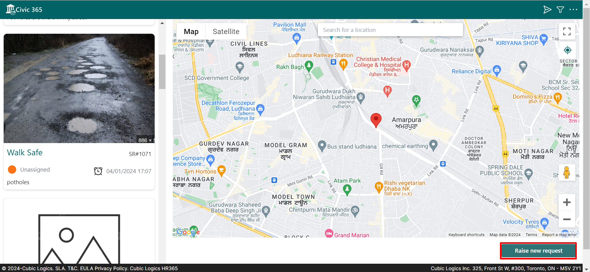
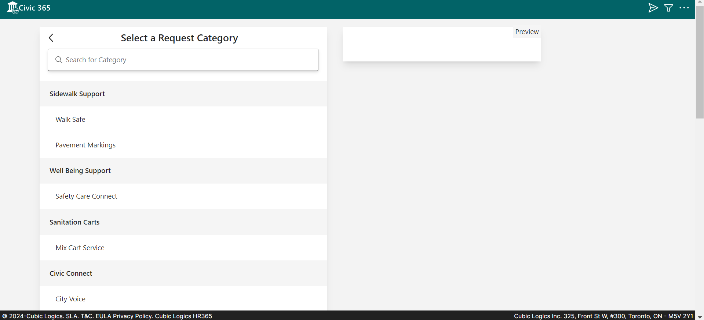
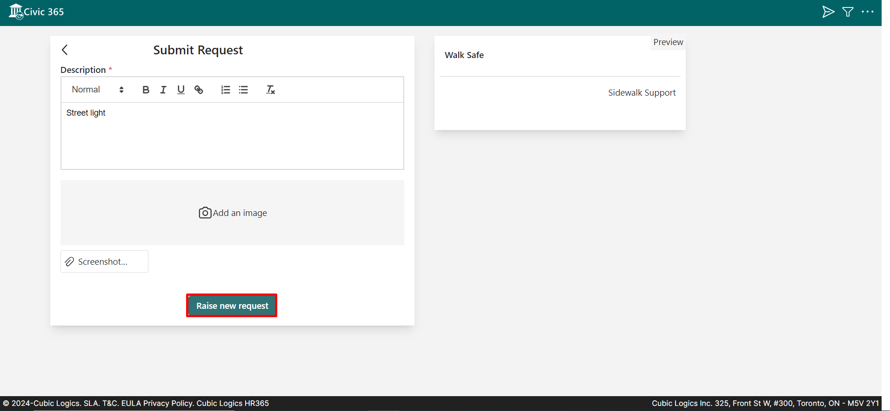
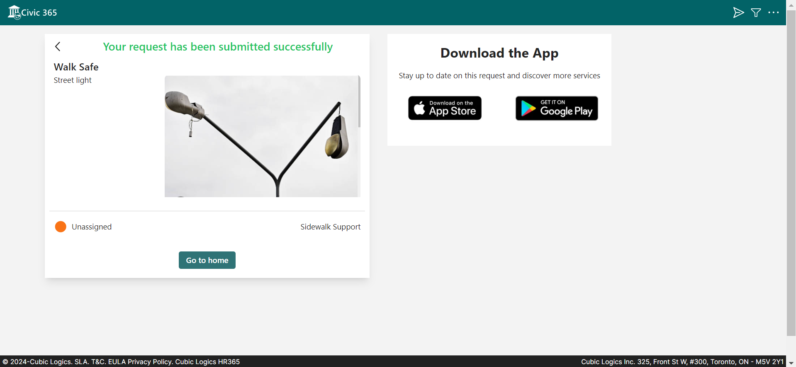

Raise New Request
You can create a request by clicking on the "Raise New Request" button.

In the dropdown, you can select the request category.

Please provide a description or title for the request you wish to raise, or add an image related to that request.

Click on Raise new request Button
